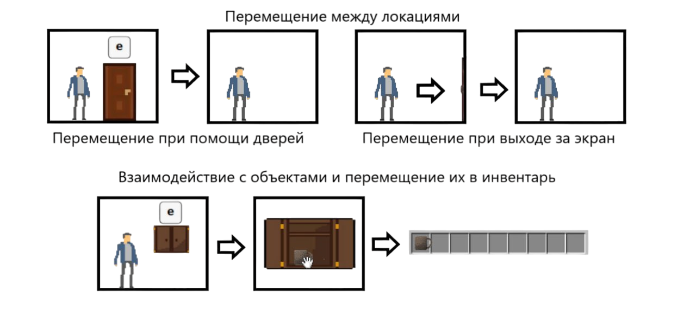
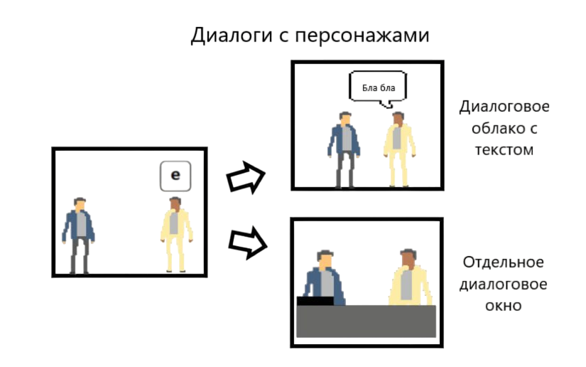

Основные механики
На данный момент, разработана основная концепция игры и макет, который показывает наглядно, как персонаж перемещается между локациями, взаимодействует с объектами, персонажами и интерактивным инвентарём: 1. Концепция: Главный герой – это учёный. Он разрабатывает машину для перемещения через вселенные. Герой хочет попасть в альтернативную вселенную, чтобы изучить генплан реконструкции Москвы, но случайно попадает в прошлое нашей вселенной на несколько веков назад (в начало XX века). Чтобы достичь своей цели, ему нужно совершить несколько временных прыжков. Он отправится в путешествие по времени, попадёт в интересные исторические места, встретит исторических личностей, связанных с этими местами, и будет выполнять их задания. Действие игры происходит в нескольких временных промежутках: XVIII, начало ХХ и ХХI века, а также в альтернативной реальности. 2. Макет и его описание: 1) Перемещение главного героя между локациями: • Когда протагонист подходит к двери, появляется кнопка взаимодействия для перехода на следующую локацию. • Когда протагонист выходит за пределы экрана, меняется локация. 2) Взаимодействие протагониста с объектами: • Когда протагонист подходит к интерактивному объекту, появляется возможность взаимодействия с ним. Пример: Главный герой подходит к шкафу, и ему надо забрать чашку. Игрок нажимает на кнопку взаимодействия, и открывается интерактивное окно. Используя курсор мышки, игрок может взаимодействовать с объектом. 3) Интерактивный инвентарь: • Главный герой обладает инвентарём, в котором хранятся важные для сюжета предметы.
Диалоги с персонажами
При общении с персонажами важные для сюжета разговоры появляются в отдельном окне (как в новеллах). Неважные для сюжета разговоры появляются в диалоговом облаке с текстом.
